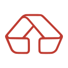

Extraídas de brand-book-ademicon.svg. Versão positiva (colorida) para fundos
claros; versão negativa (branca) para fundos escuros ou fotos com overlay. SVG é a fonte vetorial;
PNG é conveniência.


#f2f2f2 ou card branco); negativo em fundo escuro ou foto — nesta, sempre com overlay que garanta contraste.#dc2626. Não recolorir, distorcer, rotacionar nem aplicar sombra/glow no logo.